Тема рациональных чисел достаточно обширна. О ней можно говорить бесконечно и писать целые труды, каждый раз удивляясь новым фишкам.
Чтобы не допускать в будущем ошибок, в данном уроке мы немного углубимся в тему рациональных чисел, почерпнём из неё необходимые сведения и двинемся дальше.
Что такое рациональное число
Рациональное число — это число, которое может быть представлено в виде дроби  , где a — это числитель дроби, b — знаменатель дроби. Причем b не должно быть нулём, поскольку деление на ноль не допускается.
, где a — это числитель дроби, b — знаменатель дроби. Причем b не должно быть нулём, поскольку деление на ноль не допускается.
К рациональным числам относятся следующие категории чисел:
- целые числа (например −2, −1, 0 1, 2 и т.д.)
- обыкновенные дроби (например
 ,
,  ,
,  и т.п.)
и т.п.)
- смешанные числа (например
 ,
,  ,
,  и т.п.)
и т.п.)
- десятичные дроби (например 0,2 и т.п.)
- бесконечные периодические дроби (например 0,(3) и т.п.)
Каждое число из этой категории может быть представлено в виде дроби  .
.
Примеры:
Пример 1. Целое число 2 может быть представлено в виде дроби  . Значит число 2 относится не только к целым числам, но и к рациональным.
. Значит число 2 относится не только к целым числам, но и к рациональным.
Пример 2. Смешанное число  может быть представлено в виде дроби
может быть представлено в виде дроби  . Данная дробь получается путём перевода смешанного числа в неправильную дробь
. Данная дробь получается путём перевода смешанного числа в неправильную дробь
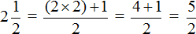
Значит смешанное число  относится к рациональным числам.
относится к рациональным числам.
Пример 3. Десятичная дробь 0,2 может быть представлена в виде дроби
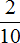
. Данная дробь получилась путём перевода десятичной дроби 0,2 в обыкновенную дробь. Если испытываете затруднения на этом моменте, повторите тему десятичных дробей.Поскольку десятичная дробь 0,2 может быть представлена в виде дроби , значит она тоже относится к рациональным числам.
Пример 4. Бесконечная периодическая дробь 0, (3) может быть представлена в виде дроби  . Данная дробь получается путём перевода чистой периодической дроби в обыкновенную дробь. Если испытываете затруднения на этом моменте, повторите тему периодические дроби.
. Данная дробь получается путём перевода чистой периодической дроби в обыкновенную дробь. Если испытываете затруднения на этом моменте, повторите тему периодические дроби.
Поскольку бесконечная периодическая дробь 0, (3) может быть представлена в виде дроби  , значит она тоже относится к рациональным числам.
, значит она тоже относится к рациональным числам.
В дальнейшем, все числа которые можно представить в виде дроби, мы всё чаще будем называть одним словосочетанием — рациональные числа.
Рациональные числа на координатной прямой
Координатную прямую мы рассматривали, когда изучали отрицательные числа. Напомним, что это прямая линия на которой лежат множество чисел. Выглядит следующим образом:

На этом рисунке приведен небольшой фрагмент координатной прямой от −5 до 5.
Отметить на координатной прямой целые числа вида 2, 0, −3 не составляет особого труда.
Намного интереснее дела обстоят с остальными числами: с обыкновенными дробями, смешанными числами, десятичными дробями и т.д. Эти числа лежат между целыми числами и этих чисел бесконечно много.
Например, отметим на координатной прямой рациональное число  . Данное число располагается ровно между нулём и единицей
. Данное число располагается ровно между нулём и единицей
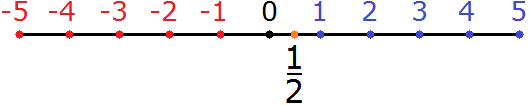
Попробуем понять, почему дробь  вдруг расположилась между нулём и единицей.
вдруг расположилась между нулём и единицей.
Как уже говорилось выше, между целыми числами лежат остальные числа — обыкновенные дроби, десятичные дроби, смешанные числа и т.д. К примеру, если увеличить участок координатной прямой от 0 до 1, то можно увидеть следующую картину
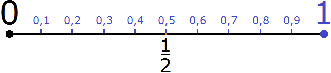
Видно, что между целыми числами 0 и 1 лежат уже другие рациональные числа, которые являются знакомыми для нас десятичными дробями. Здесь же видна наша дробь  , которая расположилась там же, где и десятичная дробь 0,5. Внимательное рассмотрение этого рисунка даёт ответ на вопрос почему дробь
, которая расположилась там же, где и десятичная дробь 0,5. Внимательное рассмотрение этого рисунка даёт ответ на вопрос почему дробь  расположилась именно там.
расположилась именно там.
Дробь  означает разделить 1 на 2. А если разделить 1 на 2, то мы получим 0,5
означает разделить 1 на 2. А если разделить 1 на 2, то мы получим 0,5

Десятичную дробь 0,5 можно замаскировать и под другие дроби. Из основного свойства дроби мы знаем, что если числитель и знаменатель дроби умножить или разделить на одно и то же число, то значение дроби не изменится.
Если числитель и знаменатель дроби  умножить на любое число, например на число 4, то мы получим новую дробь
умножить на любое число, например на число 4, то мы получим новую дробь  , а эта дробь также как и
, а эта дробь также как и  равна 0,5
равна 0,5
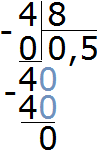
А значит на координатной прямой дробь  можно расположить там же, где и располагалась дробь
можно расположить там же, где и располагалась дробь 
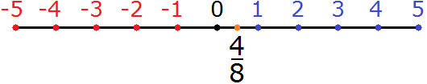
Пример 2. Попробуем отметить на координатной рациональное число  . Данное число располагается ровно между числами 1 и 2
. Данное число располагается ровно между числами 1 и 2
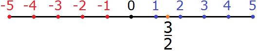
Значение дроби  равно 1,5
равно 1,5
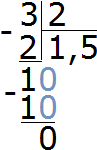
Если увеличить участок координатной прямой от 1 до 2, то мы увидим следующую картину:
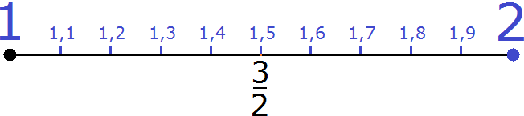
Видно, что между целыми числами 1 и 2 лежат уже другие рациональные числа, которые являются знакомыми для нас десятичными дробями. Здесь же видна наша дробь  , которая расположилась там же, где и десятичная дробь 1,5.
, которая расположилась там же, где и десятичная дробь 1,5.
Мы увеличивали определенные отрезки на координатной прямой, чтобы увидеть остальные числа, лежащие на этом отрезке. В результате, мы обнаруживали десятичные дроби, которые имели после запятой одну цифру.
Но это были не единственные числа, лежащие на этих отрезках. Чисел, лежащих на координатной прямой бесконечно много.
Нетрудно догадаться, что между десятичными дробями, имеющими после запятой одну цифру, лежат уже другие десятичные дроби, имеющие после запятой две цифры. Другими словами, сотые части отрезка.
К примеру, попробуем увидеть числа, которые лежат между десятичными дробями 0,1 и 0,2
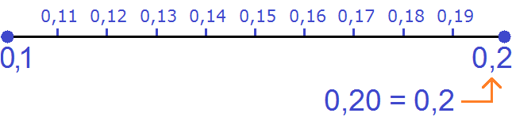
Ещё пример. Десятичные дроби, имеющие две цифры после запятой и лежащие между нулём и рациональным числом 0,1 выглядят так:
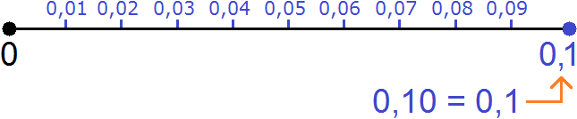
Пример 3. Отметим на координатной прямой рациональное число
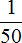
. Данное рациональное число будет располагаться очень близко к нулю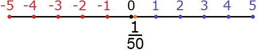
Значение дроби равно 0,02
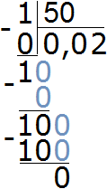
Если мы увеличим отрезок от 0 до 0,1 то увидим где точно расположилось рациональное число
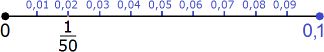
Видно, что наше рациональное число расположилось там же, где и десятичная дробь 0,02.
Пример 4. Отметим на координатной прямой рациональное число 0, (3)
Рациональное число 0, (3) является бесконечной периодической дробью. Его дробная часть никогда не заканчивается, она бесконечная
0,33333….и так далее до бесконечности..
И поскольку у числа 0,(3) дробная часть является бесконечной, это означает, что мы не сможем найти точное место на координатной прямой, где это число располагается. Мы можем лишь указать это место приблизительно.
Рациональное число 0,33333… будет располагаться очень близко к обычной десятичной дроби 0,3
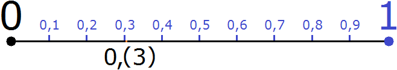
Данный рисунок не показывает точное место расположения числа 0,(3). Это лишь иллюстрация, показывающая как близко может располагаться периодическая дробь 0,(3) к обычной десятичной дроби 0,3.
Пример 5. Отметим на координатной прямой рациональное число  . Данное рациональное число будет располагаться посередине между числами 2 и 3
. Данное рациональное число будет располагаться посередине между числами 2 и 3
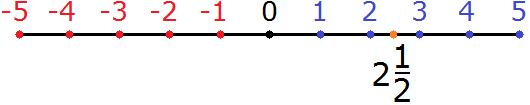
 это есть 2 (две целых) и
это есть 2 (две целых) и  (одна вторая). Дробь
(одна вторая). Дробь  по другому ещё называют «половиной». Поэтому мы отметили на координатной прямой два целых отрезка и ещё половину отрезка.
по другому ещё называют «половиной». Поэтому мы отметили на координатной прямой два целых отрезка и ещё половину отрезка.
Если перевести смешанное число  в неправильную дробь, то получим обыкновенную дробь
в неправильную дробь, то получим обыкновенную дробь  . Эта дробь на координатной прямой будет располагаться там же, где и дробь
. Эта дробь на координатной прямой будет располагаться там же, где и дробь 
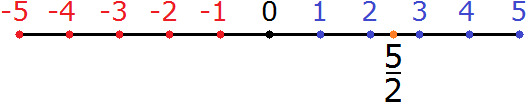
Значение дроби  равно 2,5
равно 2,5
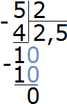
Если увеличить участок координатной прямой от 2 до 3, то мы увидим следующую картину:
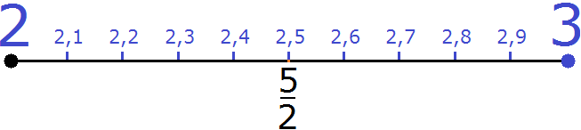
Видно, что наше рациональное число  расположилось там же, где и десятичная дробь 2,5
расположилось там же, где и десятичная дробь 2,5
Минус перед рациональным числом
В предыдущем уроке, который назвался умножение и деление целых чисел мы научились делить целые числа. В роли делимого и делителя могли стоять как положительные, так и отрицательные числа.
Рассмотрим простейшее выражение
(−6) : 2 = −3
В данном выражении делимое (−6) является отрицательным числом.
Теперь рассмотрим второе выражение
6 : (−2) = −3
Здесь уже отрицательным числом является делитель (−2). Но в обоих случаях мы получаем один и тот же ответ −3.
Учитывая, что любое деление можно записать в виде дроби, мы можем рассмотренные выше примеры также записать в виде дроби:
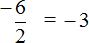
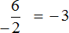
А поскольку в обоих случаях значение дроби одинаково, минус стоящий либо в числителе либо в знаменателе можно сделать общим, поставив его перед дробью
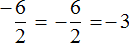
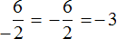
Поэтому между выражениями
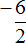
и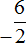
и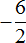
можно поставить знак равенства, потому что они несут одно и то же значение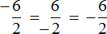
В дальнейшем работая с дробями, если минус будет нам встречаться в числителе или в знаменателе, мы будем делать этот минус общим, ставя его перед дробью.
Противоположные рациональные числа
Как и целое число, рациональное число имеет своё противоположное число.
Например, для рационального числа  противоположным числом является
противоположным числом является  . Располагается оно на координатной прямой симметрично расположению
. Располагается оно на координатной прямой симметрично расположению  относительно начала координат. Другими словами, оба этих числа равноудалены от начала координат
относительно начала координат. Другими словами, оба этих числа равноудалены от начала координат
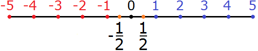
Перевод смешанных чисел в неправильные дроби
Мы знаем что для того, чтобы перевести смешанное число в неправильную дробь, нужно целую часть умножить на знаменатель дробной части и прибавить к числителю дробной части. Полученное число будет числителем новой дроби, а знаменатель остаётся прежним..
Например, переведём смешанное число  в неправильную дробь
в неправильную дробь
Умножим целую часть на знаменатель дробной части и прибавим числитель дробной части:
(2 × 2) + 1
Вычислим данное выражение:
(2 × 2) + 1 = 4 + 1 = 5
Полученное число 5 будет числителем новой дроби, а знаменатель останется прежним:

Полностью данная процедура записывается следующим образом:
Чтобы вернуть изначальное смешанное число, достаточно выделить целую часть в дроби 

Но этот способ перевода смешанного числа в неправильную дробь применим только в том случае, если смешанное число является положительным. Для отрицательного числа данный способ не сработает.
Рассмотрим дробь  . Выделим в этой дроби целую часть. Получим
. Выделим в этой дроби целую часть. Получим 
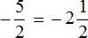
Чтобы вернуть изначальную дробь  нужно перевести смешанное число
нужно перевести смешанное число  в неправильную дробь. Но если мы воспользуемся старым правилом, а именно умножим целую часть на знаменатель дробной части и к полученному числу прибавим числитель дробной части, то получим следующее противоречие:
в неправильную дробь. Но если мы воспользуемся старым правилом, а именно умножим целую часть на знаменатель дробной части и к полученному числу прибавим числитель дробной части, то получим следующее противоречие:
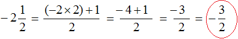
Мы получили дробь  , а должны были получить дробь
, а должны были получить дробь  .
.
Делаем вывод, что смешанное число  в неправильную дробь переведено неправильно:
в неправильную дробь переведено неправильно:
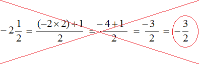
Чтобы правильно перевести отрицательное смешанное число в неправильную дробь, нужно целую часть умножить на знаменатель дробной части, и из полученного числа вычесть числитель дробной части. В этом случае у нас всё встанет на свои места
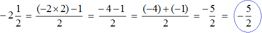
Отрицательное смешанное число  является противоположным для смешанного числа
является противоположным для смешанного числа  . Если положительное смешанное число
. Если положительное смешанное число  располагается в правой части и выглядит так
располагается в правой части и выглядит так
то отрицательное смешанное число  будет располагаться в левой части симметрично
будет располагаться в левой части симметрично  относительное начала координат
относительное начала координат
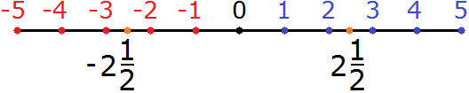
И если  читается как «две целых и одна вторая», то
читается как «две целых и одна вторая», то  читается как «минус две целых и минус одна вторая». Поскольку числа −2 и
читается как «минус две целых и минус одна вторая». Поскольку числа −2 и  располагаются в левой части координатной прямой — они оба являются отрицательными.
располагаются в левой части координатной прямой — они оба являются отрицательными.
Любое смешанное число можно записать в развёрнутом виде. Положительное смешанное число  в развёрнутом виде записывается как
в развёрнутом виде записывается как  .
.
А отрицательное смешанное число  записывается как
записывается как
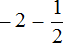
Теперь мы можем понять, почему смешанное число  расположилось в левой части координатной прямой. Минус перед двойкой указывает, что мы сдвинулись от нуля на два шага влево, в результате оказались в точке, где находится число −2
расположилось в левой части координатной прямой. Минус перед двойкой указывает, что мы сдвинулись от нуля на два шага влево, в результате оказались в точке, где находится число −2
Затем, начиная от числа −2 сдвинулись ещё влево на  шага. А поскольку значение
шага. А поскольку значение  равно −0,5 то наш шаг будет половиной от полного шага.
равно −0,5 то наш шаг будет половиной от полного шага.
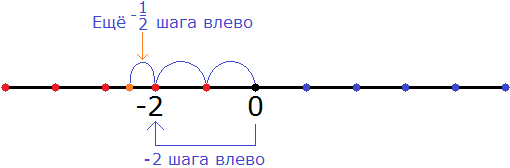
В итоге, мы окажемся посередине между числами −3 и −2
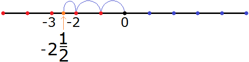
Пример 2. Выделить в неправильной дроби
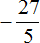
целую часть, затем полученное смешанное число обратно перевести в неправильную дробьВыполним первую часть задания, а именно выделим в неправильной дроби целую часть
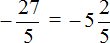
Выполним вторую часть задания, а именно переведём полученное смешанное число
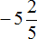
в неправильную дробь. Для этого умножим целую часть на знаменатель дробной части и из полученного числа вычтем числитель дробной части: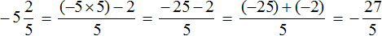
Если нет желания путаться и привыкать к новому правилу, то можно смешанное число заключить в скобки, а минус оставить за скобкой. Тогда можно будет применить старое доброе правило: умножить целую часть на знаменатель дробной части и к полученному числу прибавить числитель дробной части.
Выполним предыдущее задание этим способом, а именно переведём смешанное число в неправильную дробь
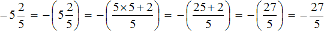